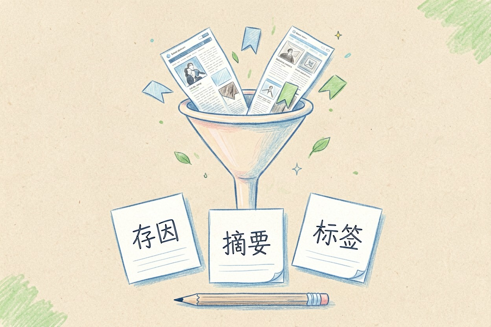
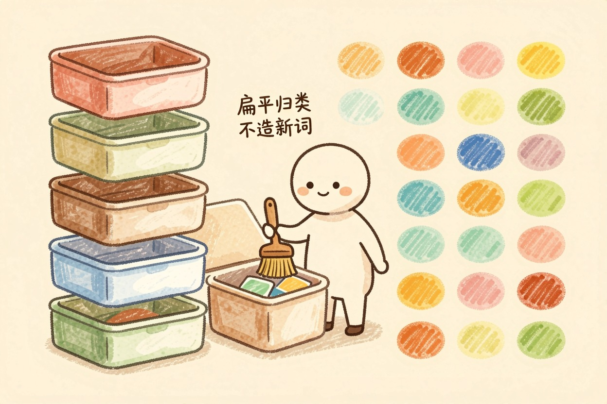
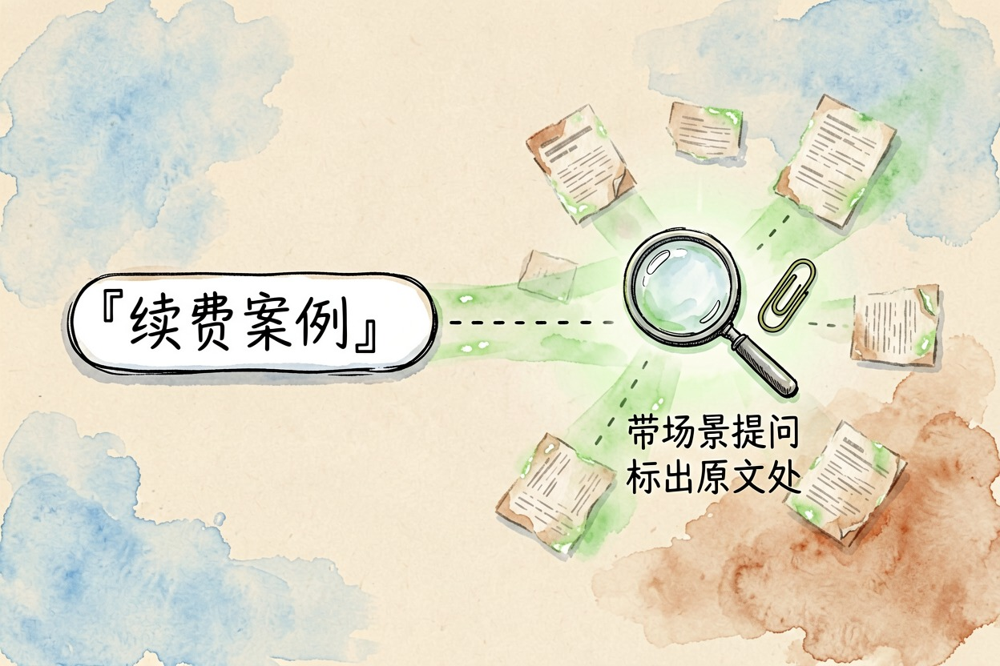

用 AI 搭个人知识库？收集到检索的全流程 — Learntide
存了几百篇资料却一篇都想不起来放哪，问题多半出在入库那一步，而不是工具不够好。
ai搭建个人知识库：先分清记不住和找不到

ai搭建个人知识库之前，先回答一个问题：你是记不住，还是找不到。这两件事解法不同。记不住靠输出和复述，找不到才靠工具。很多人把后者当成前者，工具换了一轮，问题原样留着。
知识库的价值只在调用那一刻兑现。写方案卡壳时，一句话把三个月前存的案例捞出来，这才算回本。
整套流程分四段：收集、整理、索引、检索。第二大脑怎么建，说到底就是这四段的取舍。
收集：入口收窄，进门先补三行

第一个坑是入口太多。微信收藏一份，浏览器书签一份，笔记软件再存一份。资料散成三摊，等于哪摊都不可信。挑一个主库，其余只当临时中转。
第二个坑是裸存。剪藏一篇文章只留标题和正文，三个月后看标题完全想不起为什么存。存的时候多花二十秒，补三行：为什么存、一句话讲什么、三个标签。这二十秒省的是以后的半小时。
批量补这三行可以交给模型。剪藏工具导出的清单整段喂过去，让它逐条生成摘要和标签，你只做抽查。
整理：先用扁平标签，晚点再谈体系

新手最容易在这一步过度设计。照着某套分类法建六层目录，结果每次存东西都要纠结放哪，纠结两次就不想存了。个人知识库怎么做，答案往往是先粗后细。
务实的办法是扁平化。一层目录按大领域分，五到八个足够。细分交给标签，标签数控制在三十个以内，宁可复用也别新造。
给模型定死规则让它按你的标签表归类，比它自由发挥靠谱：
你是我的知识库整理助手。已有标签表如下：
产品 增长 数据 管理 行业 工具 待读 存档
请为下面每条资料输出一行，格式：
标题 | 一句话摘要（不超过 25 字） | 标签（最多 3 个，只能从上表选）
规则：
1 标签必须来自上表，不允许新造
2 摘要写这条资料解决什么问题，不要复述开头
3 判断不了归类的，标签写「待读」，不要硬套
【粘贴你导出的资料清单】跑完先看「待读」占多少。超过三成，说明标签表和实际内容对不上，改表比改资料快。
索引与检索：语义搜索解决的是想不起词
全文搜索要求你记得原文用词。可你脑子里留下的往往是「上次那个讲留存怎么算的」，原文写的却是「次日回访率」。语义检索按意思匹配，正好补这个缺口。
现在多数工具的知识库问答背后都是这套机制，资料被切块转成向量再比相似度。
用起来记住两点。一是提问要带场景，「找一篇能用在续费方案里的案例」比只打「续费」有效得多。二是永远让它标出处，答案对不对，你得能回原文核对。
维护成本与几个提醒
知识库有持有成本。每周花二十分钟清一次待读，把两个月没碰过的沉进存档层，库才不会烂掉。
别追求把什么都收进来。真正会被反复调用的资料通常不到总量两成，剩下八成是心理安慰。也别急着换工具，ai知识库工具怎么选可以慢慢比，迁移一次的代价比你以为的高。选型从工具导航里挑就行。
工具只是容器。ai搭建个人知识库能不能成，看的从来不是软件多强，而是你肯不肯守住入库那二十秒。
本文信息核对于 2026-08-08。AI 产品的价格、免费额度与功能变动频繁，实际以各工具官网当前说明为准。